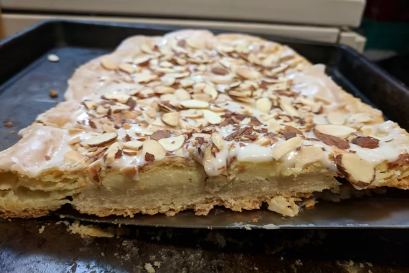

Go back
Swedish Pastry

Ingredients
- ½ cup butter
- 1 cup all-purpose flour
- ¼ teaspoon butter flavored extract
- 2 tablespoons water
- 1 cup water
- ½ cup butter
- ¼ teaspoon butter flavored extract
- 1 cup all-purpose flour
- 3 eggs
- 1 teaspoon almond extract
- 1 cup confectioners' sugar
- ½ teaspoon almond extract
- ¼ teaspoon butter flavored extract
- 1 tablespoon milk
Directions
- Preheat an oven to 350 degrees F (175 degrees C).
- Cut 1/2 cup butter into 1 cup flour with a knife or pastry blender in a bowl until the mixture resembles coarse crumbs. Stir in 1/4 teaspoon butter extract. Add the water a tablespoon at a time, tossing with a fork, until the flour mixture is moistened. Press mixture onto the bottom of a 10x13-inch baking sheet.
- Bring 1 cup water, 1/2 cup butter, and 1/2 teaspoon butter extract to a boil in a saucepan over medium-high heat. Remove from heat, then beat in 1 cup flour. Beat in eggs one at a time until blended. Stir in 1 teaspoon almond extract, and pour over crust.
- Bake in the preheated oven until golden brown, about 55 minutes.
- Meanwhile, mix the confectioners' sugar, 1/2 teaspoon almond extract, 1/4 teaspoon butter extract, and 1 tablespoon milk in a bowl until smooth. Spread mixture over the hot pastry.